Ce projet a pour objectif de concevoir un cardiomètre sans fil, capable de mesurer la fréquence cardiaque (bpm) à l'aide d'un capteur dédié, puis de transmettre cette donnée par radio à un IHM. Le système s’articule autour de plusieurs modules : La conception de l'émission avec un microcontrôleur ATtiny85 chargé de décoder les données et de les envoyer via un module radio, et un système de réception avec interface graphique permettant l’affichage des données en temps réel.
| Tâche à réaliser | Ressources utilisées | Traces | Autoévaluation |
|---|---|---|---|
| Etude de l’existant – concurrence – normes Cette étape préliminaire est très intéressante, car elle permet de voir ce qu’il se fait déjà comme produit sur le marché. Grâce à cette analyse, on sait ce qui est possible et ce qui ne l’est pas. |
Pédagogique : Cours de Vie en Entreprise
Documentation : AFNOR |
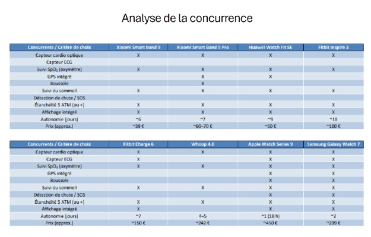 |
9/10
Cette analyse complète du produit a bien été réussi dans l’ensemble. Je suis satisfait du travail d’analyse que j’ai effectué. |
| Simulation et compréhension du capteur cardiaque L’objectif de cette partie est de comprendre le circuit électrique du capteur donné en début de projet. Cette étude permet de savoir comment réagis le circuit en fonction des bpm et par extension, elle permet d’avoir un premier aperçu sur l’algorithmie à utiliser pour décoder les bpm. |
Logiciel : Simul IDE, LTspice
Documentation : Circuit électrique du capteur cardiaque |
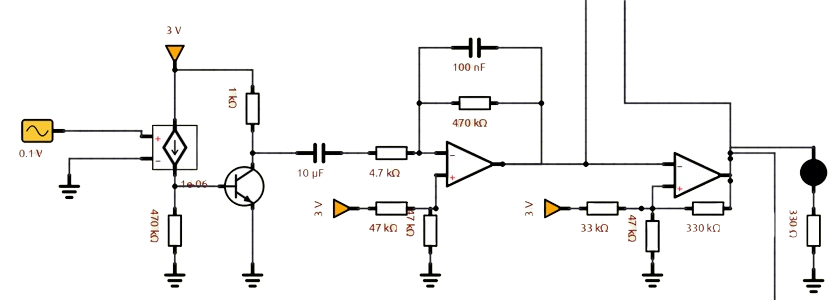 |
7.5/10
Dans un premier temps, j'ai eu du mal à comprendre le fonctionnement du système électrique. Mais après avoir analysé composant par composant, j'ai su m'approprier le circuit électrique. Je pense que malgré la difficulté du début, cette tâche est une réussite. |
| Conception d’un émetteur Tx à partir du TXM-433-LR Afin de pouvoir émettre pour la suite du projet, il était indispensable de réaliser un émetteur radio prototype pour comprendre le fonctionnement de ce dernier. |
Documentation : Datasheet du LR Series Transmitter Module |
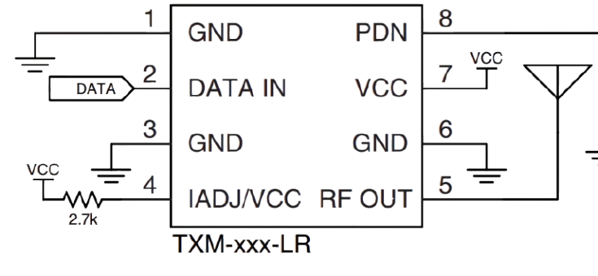 |
10/10
Cette conception était relativement simple. J'ai suivi le schéma présent dans la datasheet ce qui ne m'a pas posé de problème particulier. |
| Etude de l’émetteur et récepteur
L’intérêt de cette partie est de comprendre comment fonctionne l’émetteur et le récepteur que l’on va utiliser pour la suite du projet. On va donc analyser ces différentes spécificités et son comportement. |
Documentation : Datasheet de l’émetteur et du récepteur
Matériels : Émetteur et récepteur |
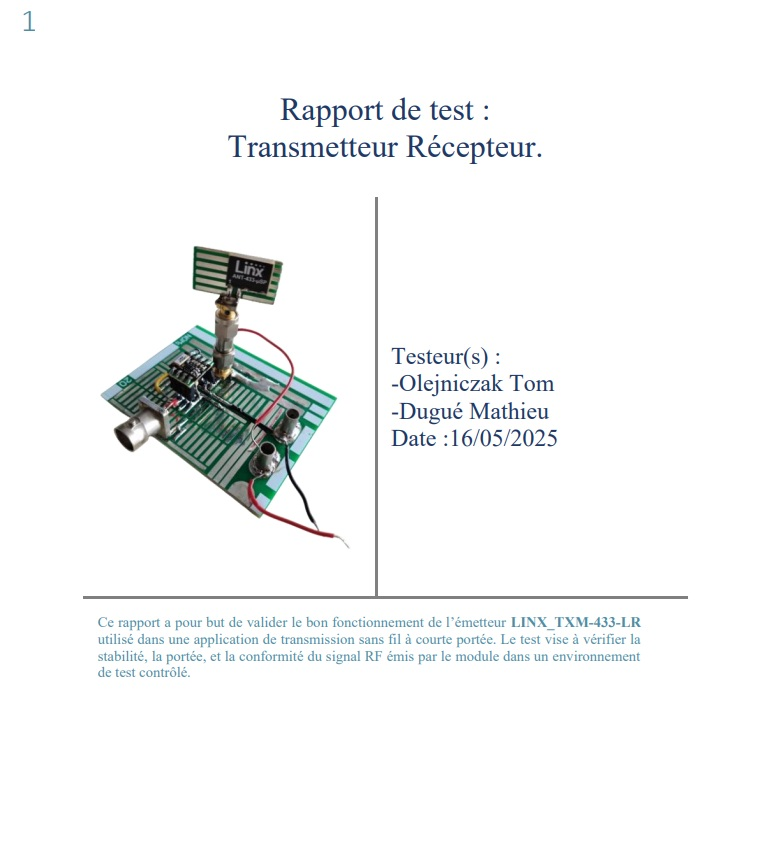 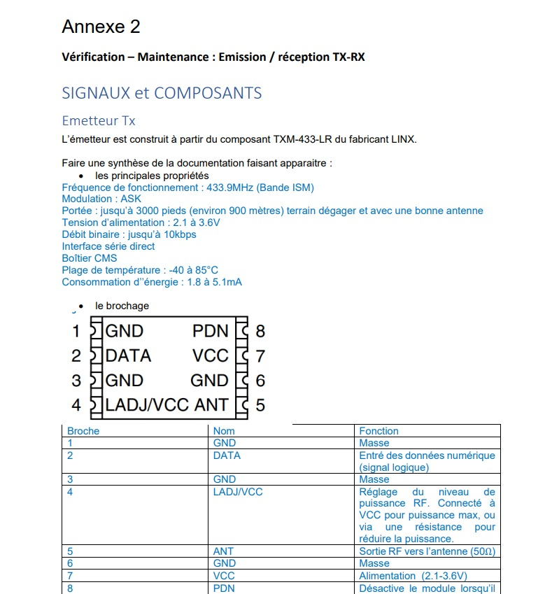 |
8/10
Pour cette partie, je m'occupais de la création de l'antenne. Je n'ai par conséquent, pas trop travaillé sur l'étude de l'émetteur et du récepteur. Cependant, je pense avoir compris toutes les notions notées dans le compte-rendu. |
| Création du code décodant les bpm à l’aide d’une ATtiny85
Afin de pouvoir lire les bpm et de les envoyer en signal radio, il est nécessaire de programmer un microcontrôleur servant d'intermédiaire entre les deux étapes. Pour ce faire, on utilise un ATtiny85, un contrôleur déjà utilisé sur le projet Voltmètre. Une fois les bpm décodés, ces derniers sont codé sur deux trames UART afin de pouvoir envoyer la donnée par signal radio. |
Logiciel : Arduino IDE, Simul IDE
Matériels : ATtiny85 |
|
10/10
Cette partie du projet était pour moi l'une des parties que j'ai apprécié réaliser. Je n'ai pas eu de grosse difficulté pour réaliser le code et ce dernier fonctionnait parfaitement en simulation. |
| Vérification pratique de la simulation L'objectif de cette partie est de tester l'ATtiny85 en situation réelle. Pour ce faire, on utilise un GBF pour simuler le comportement du capteur, on le connecte à l'ATtiny85 qui va par la suite envoyer les bpm calculés sur l'émetteur utilisé dans la partie précédente. On compare ensuite ce qu'on envoie avec ce qu'on reçoit avec le récepteur. |
Logiciel : Arduino IDE, Simul IDE
Matériels : ATtiny85 |
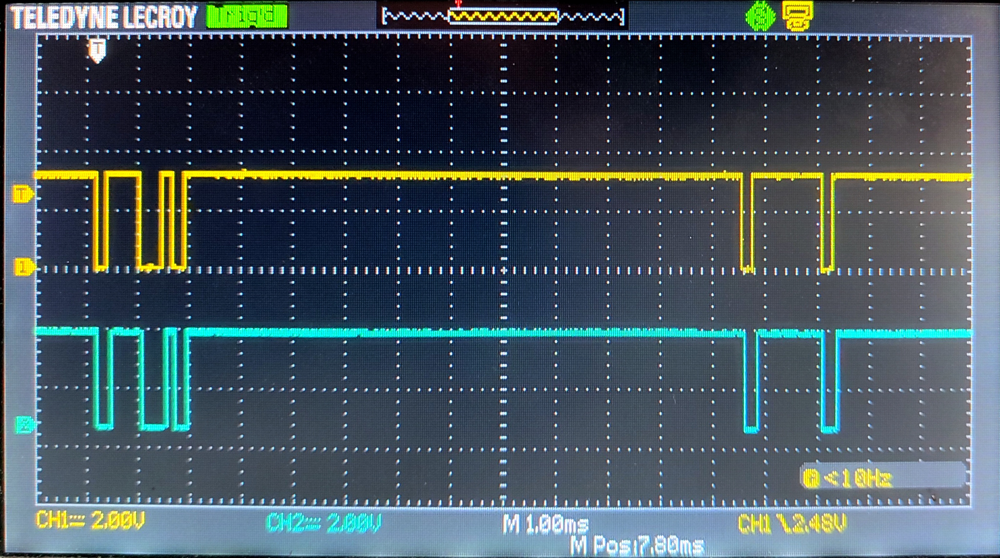 |
10/10
Le code utilisé en simulation a fonctionné parfaitement en pratique. Cette étape est une réussite. |
| Création du PCB Pour pouvoir avoir un résultat plus propre et plus stable, il est nécessaire de réaliser un PCB. Pour le réaliser, j'ai reproduit mon circuit électrique sur Kicad et j'ai par la suite routé mon PCB. |
Logiciel : Kicad
Matériels : Plaque de cuivre, divers composants |
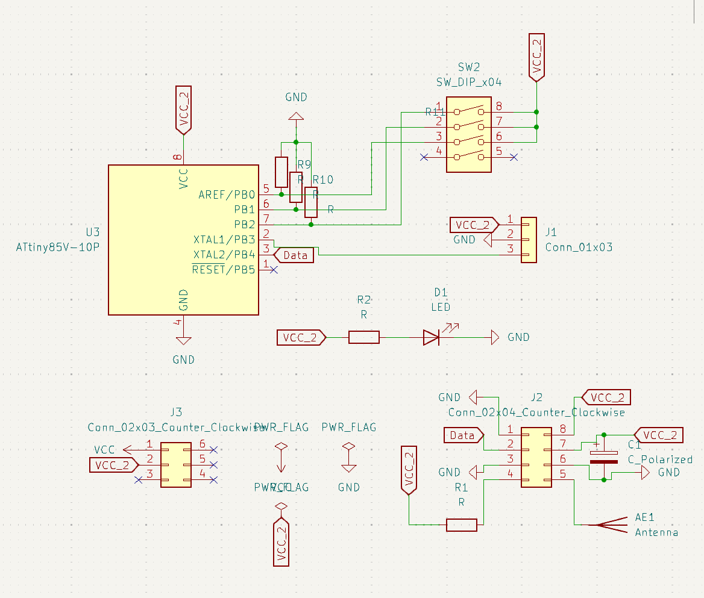 .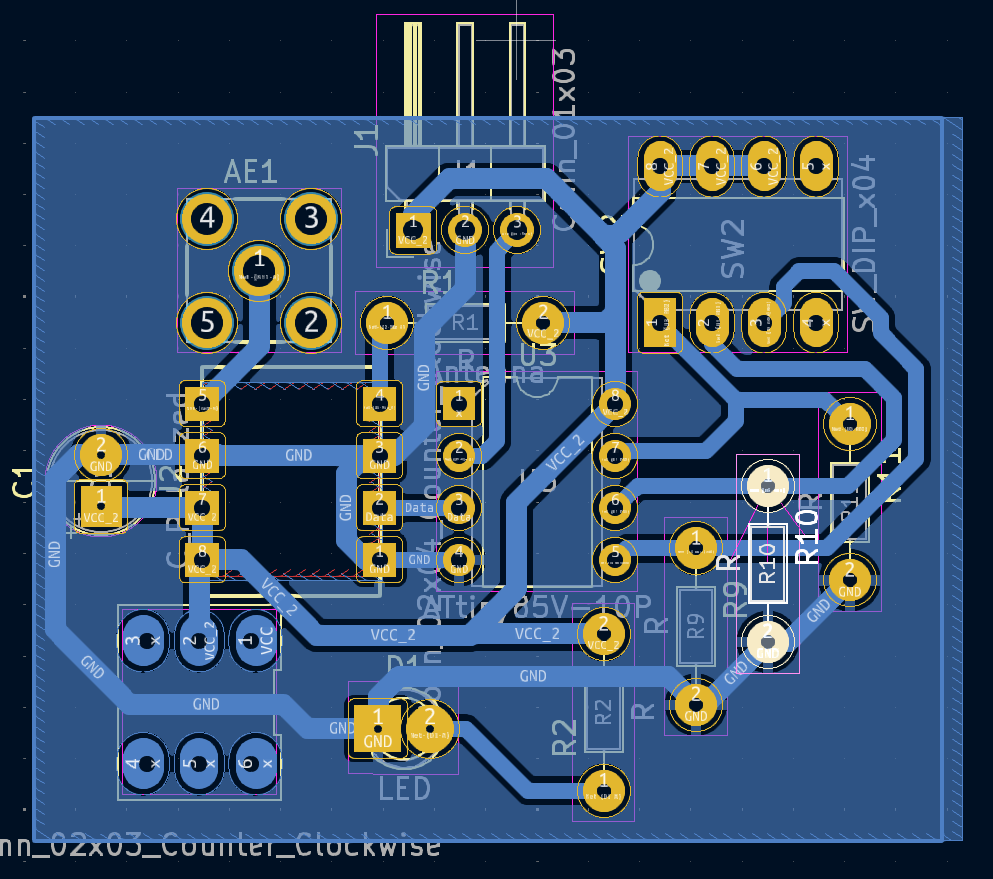 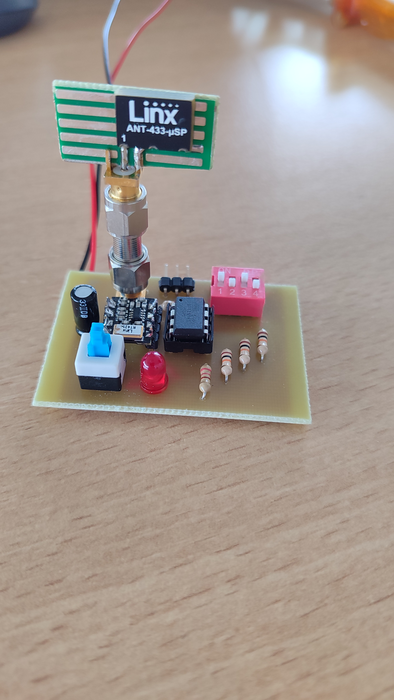 |
9/10
La réalisation du PCB n'a pas posé de grande difficulté. Nous avons tout même du refaire plusieurs empreintes de composant, car il n'était pas disponible dans Kicad. Mis à part ces très léger problème, le PCB a fonctionné parfaitement. |
| Création d’un Gantt prévisionnel pour la partie réception Cette partie permet de connaître le temps de réalisation de la partie réception. Grâce à cette prévisualisation, on peut correctement se répartir les tâches dans l'équipe. |
Pédagogique : Cours de Vie en Entreprise
Logiciel : Gantt Project |
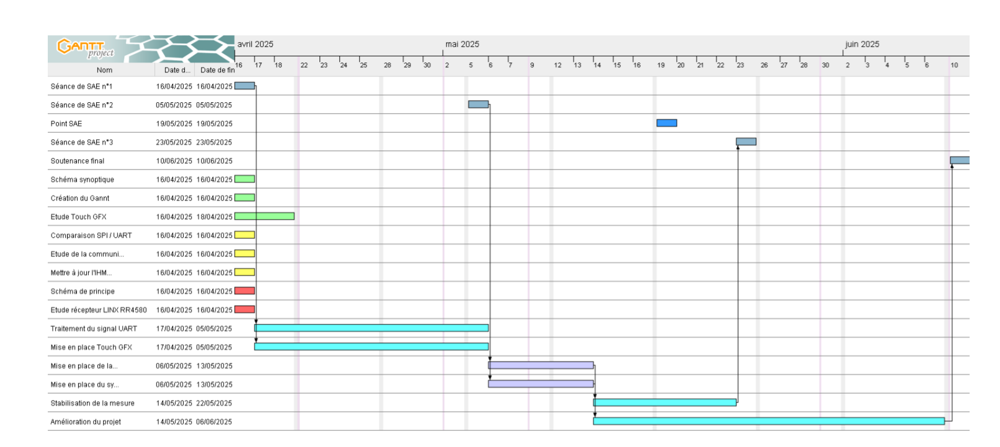 |
10/10
La création des Gantt m'était déjà connu. De ce fait, je n'ai pas eu de problème à bien répartir les tâches jusqu’à deadline. |
| Mise en place de TouchGFX Pour pouvoir réaliser une interface fluide et interactive, on a eu l'idée d'utiliser TouchGFX. Il permet de réaliser de nombreuses fonctions de façon dynamique et fluide ce qui est très intéressant pour un IHM. |
Logiciel : TouchGFX, STM32CubeIDE, STM32CubeMX
Matériels : STM32F429 Discovery |
5/10
Touch GFX m'a posé énormément de problème. Je n'ai pas réussi à réaliser ce que je voulais avec ce logiciel. Néanmoins, je pense avoir compris plusieurs nouvelles notions qui pourront me servir dans le futur. |
|
| Création de l’IHM du cardiomètre Étant donné que TouchGFX n'a pas fonctionné. L’objectif de cette partie était de reprendre l'IHM du voltmètre et de l'adapter pour le cardiomètre. De plus, j'ai amélioré l'esthétique de l'IHM pour qu'elle soit plus agréable à utiliser. |
Pédagogique :
Logiciel : STM32CubeIDE, Inkscape Matériels : STM32F429 Discovery |
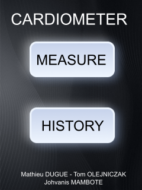 .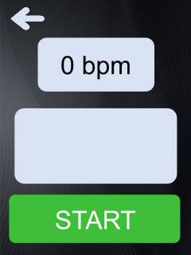 . |
10/10
La création d'IHM est une notion que j'ai pu beaucoup travaillés durant mon stage. Je me suis donc occupé de cette partie dans l'objectif de la remettre au goût du jour. Je pense que l'IHM de ce projet est plus agréable visuellement que la version du voltmètre ce qui est une bonne progression. |
| Décodage et affichage des bpm sur l'IHM Le but de cette tâche est de décoder les trames UART transmises par l’ATtiny85. Pour cela, on applique une logique inverse à celle utilisée lors de l'encodage des trames. Une fois les données extraites, elles sont affichées sur l’interface utilisateur, de la même manière que dans le projet Voltmètre. |
Logiciel : STM32CubeIDE, STM32CubeMX
Matériels : STM32F429 Discovery |
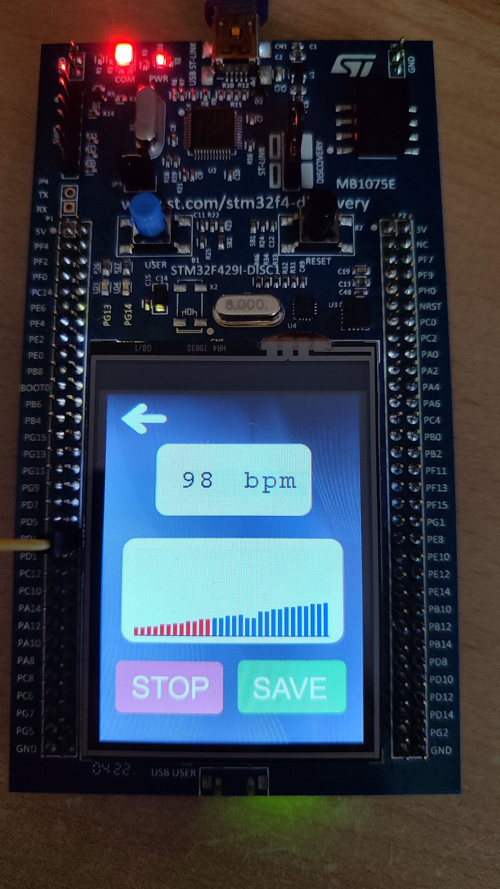 |
9/10
Cette tâche ne m'a pas posé de gros problème. Mis à part quelques problèmes mineurs concernant l'affichage, je pense que c'est une réussite. |
| Création d'un graphique représentant les bpm en temps réel Le graphique a pour objectif de fournir un retour visuel en temps réel sur les BPM. Il permet également de conserver un court historique en affichant les valeurs précédentes. |
Logiciel : STM32CubeIDE, STM32CubeMX
Matériels : STM32F429 Discovery |
10/10
Cette fonction ne fut pas réalisée par moi, je me suis occupé d'intégrer la fonction au code principale et je pense que son intégration est une réussite. |
|
| Création de l'historique et analyse des bpm L'objectif de cette partie est de pouvoir sauvegarder des valeurs de bpm précise. De plus, grâce à l'onglet historique, on est capable de savoir le minimum, le maximum et la moyenne des bpm des dernière mesure. |
Logiciel : STM32CubeIDE, STM32CubeMX
Matériels : STM32F429 Discovery |
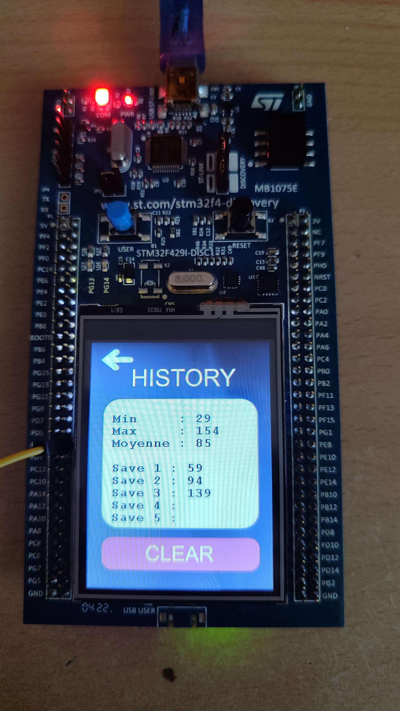 |
10/10
Par rapport au projet Voltmètre, les fonctions historiques et sauvegarde sont une grande réussite. Je suis satisfait de ces fonctions. |
| Création du montage final La dernière étape du projet consiste à assembler les deux modules, l’émetteur et le récepteur, afin d’obtenir un cardiomètre fonctionnel et complet. |
Matériels : Montage parti émission plus partie réception connectée à la STM32F429 | Non disponible | 10/10
Pour finir le projet, j'ai assemblé toutes les différentes parties de ce dernier. J'ai pu constater que le montage fonctionné parfaitement ce qui me permet de dire que ce projet est un succès. |
| ANALYSE PERSONNELLE | |||
| Ce projet a représenté un véritable défi. Le nombre de tâches à accomplir dans un délai très court a poussé mon équipe et moi-même à nous surpasser. J’ai dû considérablement progresser en termes d’organisation et de méthode de travail pour réussir ce challenge. Sur le plan technique, ce projet ne m’a pas apporté de nouvelles notions majeures, car il reposait sur des compétences déjà acquises lors du projet Voltmètre. Cela m’a toutefois permis de gagner du temps sur la programmation et de consolider mes acquis. En conclusion, ce projet est une réussite à la fois technique et organisationnelle. Je compte réutiliser plusieurs des méthodes de travail adoptées ici dans mes futures réalisations. | |||